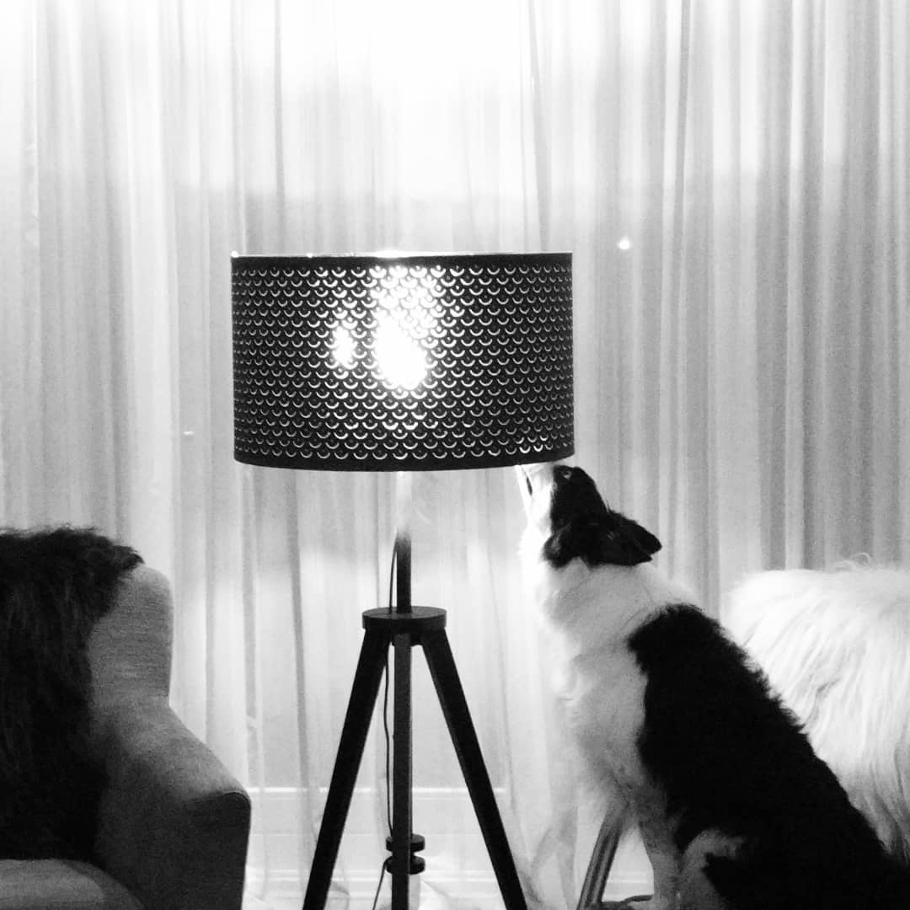

Wat is detectie?
Detectie, of speuren met de hond, is het zoeken naar een specifieke geur. De hond zoekt een gebied of ruimte af en wijst aan waar de geur ligt. Dat kan door bijvoorbeeld te gaan zitten, liggen of bevriezen.
Een hond heeft veel meer geurcellen in zijn neus dan een mens. Daardoor ruikt de hond veel beter. Dit zorgt er voor dat hij minieme hoeveelheden moleculen in de lucht al kan ruiken. Geuren die voor ons niet te onderscheiden zijn, zoals bijvoorbeeld van explosieven, kan een hond prima ruiken.
Een duidelijke uitleg kun je hier bekijken. In deze Ted-Ex talk van Alexandra Horowitz wordt heel duidelijk verteld hoe een hond ruikt:
Bij de training leren we de hond eerst een verwijzing aan. Dat doen we door gebruik te maken van de rode Kong. Eerst een hele, daarna wordt de kong kleiner gemaakt om het zoeken moeilijker te maken.
Zodra de hond kan verwijzen beginnen we met het zoekwerk. Dit kan in line-ups (denk hierbij aan bijvoorbeeld honden die op de lopende band in een vliegveld werken), maar ook binnen- en buitenruimtes afzoeken. Daarnaast zijn er nog de speciale zoekingen- bijvoorbeeld het afzoeken van een rek vol fietsen, een auto of een vrachtwagen.
Uiteindelijk is het de bedoeling dat de hond meerdere locaties op een dag af kan zoeken en aan kan geven of de stof waar hij op getrained is aanwezig is of niet. Daarvoor is een goede samenwerking met de begeleider ("handler") nodig. De handler kijkt namelijk of de hond een stuk overslaat, of hij misschien moeite heeft met het localiseren van de bron, of dat de hond te moe is om verder te gaan. Detectie is dus niet alleen het trainen van de hond, maar ook het trainen van de mens!
